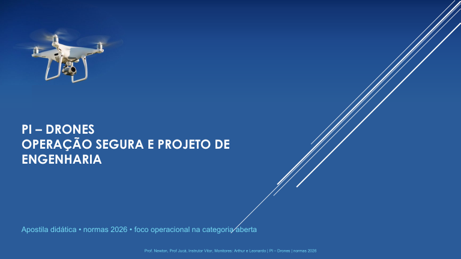

Apostila ampliada
Apostila original de 84 páginas acompanhada do novo caderno de casos, modelos e roteiros.
Materiais para os apresentadores, parceiros e engenheirandos, com versões em PDF e arquivos editáveis.
Apostila original de 84 páginas acompanhada do novo caderno de casos, modelos e roteiros.
Leitura de apoio, roteiros, casos comentados, catálogo, notícias, normas e glossário.
Um arquivo para os dois apresentadores prepararem gravações e demonstrações.
Base do curso enviada pelo professor; autoria e conteúdo preservados.
Markdown, dados estruturados, checklists e guias, em um arquivo ZIP.
Planejamento de gravação, materiais de apoio, captação e publicação.
Modelo para objetivo, responsabilidades, decisão e debrief.
Onde inserir cada episódio, caso e ficha no curso de 12 encontros.

A base do curso continua disponível. O caderno acrescenta aplicações, estudos, modelos e perguntas, e o plano de integração mostra onde usar cada material.
Marcação local nesta página; não é autorização nem registro formal. A ficha editável permite documentar a decisão.